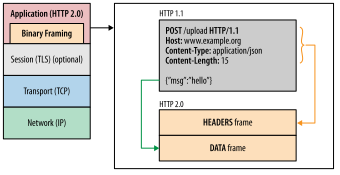

Introduction to HTTP/2
https://web.dev/performance-http2/
http2相比http1.x目标就是减少浏览器上的延迟，雏形是google在2009年发起的spdy协议，在2015年正式变更为http2协议。相比http1.x语义层不发生任何变化，原来处理http1.x的应用层逻辑还是可以使用，主要改进是在传输层上。
我这里总结了一下http2的几个重大改进点：
- One connection per origin. 和origin只会创建一个TCP连接，每个逻辑连接变为stream. stream上面传输message, message可以被拆分成为多个frames，包括header frame和data frames.
- Request and response multiplexing. 因为和origin只有一个tcp连接，所以res/resp必须支持复用，每个stream上面都会产生一个uuid来表示逻辑连接。
- Binary framing layer. 传输层变为二进制格式而不是text格式，减少压缩体积。
- Stream prioritization 每个流上可以指定优先级别，然后还可以指定层级关系：parent优先级别更高，sibling之间按照weight进行划分。不过parent message并不一定保证比children message先到达。
- Flow control 这个东西不能关闭并且是hop-to-hop而不是end-to-end，粒度可以是stream-level也可以是connection-level. 初始化的时候使用settings指令交换window size, 然后使用window update命令来更新窗口大小。
- Server push. 服务器可以主动推送资源metadata信息包装在promise中，promise里面可能包含资源地址以及ETAG这样的东西。可以想象获取页面加载css场景，服务器先发送css promise信息然后发送页面数据，client拿到页面数据之后，可以就知道哪些css已经加载过了就不用申请。通常一个页面请求所有资源都是在一个promise里面。
- Header compression. 许多请求header字段是完全一样的，通过交换hashtable可以减少公共header的传输：可以分为static table(general common header)和dynamic table(application common header).
单个连接上的多个streams

binary framing

push promise

header compression